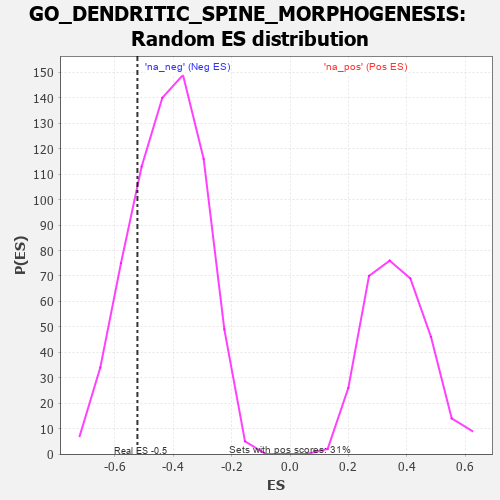

| | | Dataset | 7d |
| Phenotype | NoPhenotypeAvailable |
| Upregulated in class | na_neg |
| GeneSet | GO_DENDRITIC_SPINE_MORPHOGENESIS |
| Enrichment Score (ES) | -0.5230905 |
| Normalized Enrichment Score (NES) | -1.2401268 |
| Nominal p-value | 0.22238372 |
| FDR q-value | 0.5602699 |
| FWER p-Value | 1.0 |
Table: GSEA Results Summary
 Fig 1: Enrichment plot: GO_DENDRITIC_SPINE_MORPHOGENESIS
Fig 1: Enrichment plot: GO_DENDRITIC_SPINE_MORPHOGENESIS
Profile of the Running ES Score & Positions of GeneSet Members on the Rank Ordered List
| PROBE | GENE SYMBOL | GENE_TITLE | RANK IN GENE LIST | RANK METRIC SCORE | RUNNING ES | CORE ENRICHMENT | | 1 | PAK3 | | | 1889 | 0.322 | -0.1826 | No |
| 2 | KIF1A | | | 3415 | 0.088 | -0.3593 | No |
| 3 | CDK5 | | | 3480 | 0.080 | -0.3537 | No |
| 4 | OPA1 | | | 4330 | -0.065 | -0.4492 | No |
| 5 | LRRK2 | | | 4467 | -0.087 | -0.4515 | No |
| 6 | ABI2 | | | 4554 | -0.106 | -0.4442 | No |
| 7 | HDAC6 | | | 5183 | -0.244 | -0.4815 | Yes |
| 8 | PTEN | | | 5262 | -0.261 | -0.4468 | Yes |
| 9 | EPHA4 | | | 5273 | -0.265 | -0.4030 | Yes |
| 10 | DLG4 | | | 5388 | -0.293 | -0.3674 | Yes |
| 11 | DBNL | | | 6084 | -0.501 | -0.3695 | Yes |
| 12 | CDC42 | | | 6236 | -0.548 | -0.2951 | Yes |
| 13 | LRP8 | | | 6931 | -0.889 | -0.2310 | Yes |
| 14 | DNM1L | | | 6963 | -0.913 | -0.0794 | Yes |
| 15 | NGEF | | | 7335 | -1.209 | 0.0799 | Yes |
Table: GSEA details [plain text format]

Fig 2: GO_DENDRITIC_SPINE_MORPHOGENESIS: Random ES distribution
Gene set null distribution of ES for GO_DENDRITIC_SPINE_MORPHOGENESIS